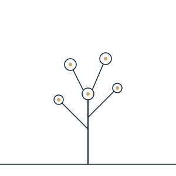

ABOUT
SHUKUについて
SHUKUは、名古屋の地域活性化を見据え、AIを道具として使いこなし、自ら課題を見つけ、 行動を起こせる人材を教育を通じて育てていくことを目指す団体です。「プログラミングの 勉強」ではなく、「AIと対話しながらアイデアを形にする体験」を通じて、子どもたちの 創造性や問題解決力を育みたいと考えています。
現在は法人化前の任意団体として活動しており、2026年8月に第一回となるパイロット ワークショップを名古屋市内で開催します。今回の経験と実績を積み重ねながら、教育機関等 との連携も視野に、少しずつ活動の幅を広げていく予定です。

FOUNDER
 詳しいプロフィールはこちら
詳しいプロフィールはこちら
組織責任者について
杉浦健太郎
Kentaro Sugiura
僕は大手メーカーに勤務しながら、生成AIをはじめとしたデジタル技術を活用して、 業務改善や新しい取り組みの企画・推進に携わってきました。
日々の仕事を通じて、AIが一部の専門家だけのものではなく「誰もが使いこなせる 道具」になりつつあることを実感し、その体験を次の世代に届けたいという思いから SHUKUを立ち上げました。